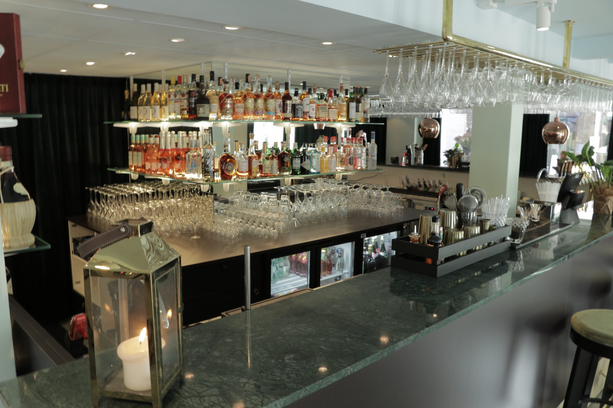
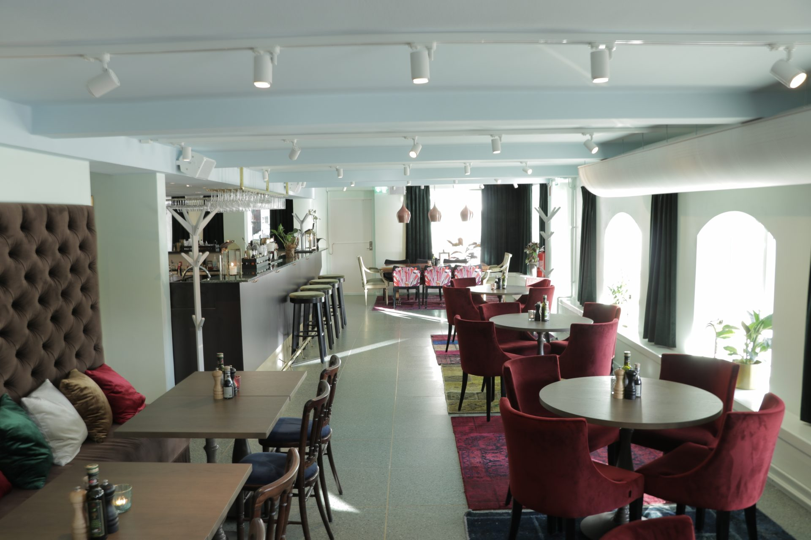
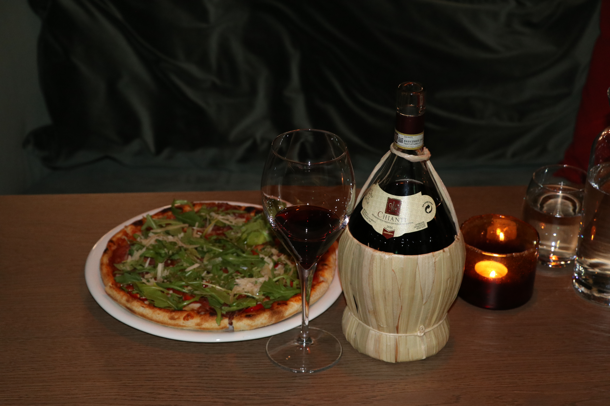
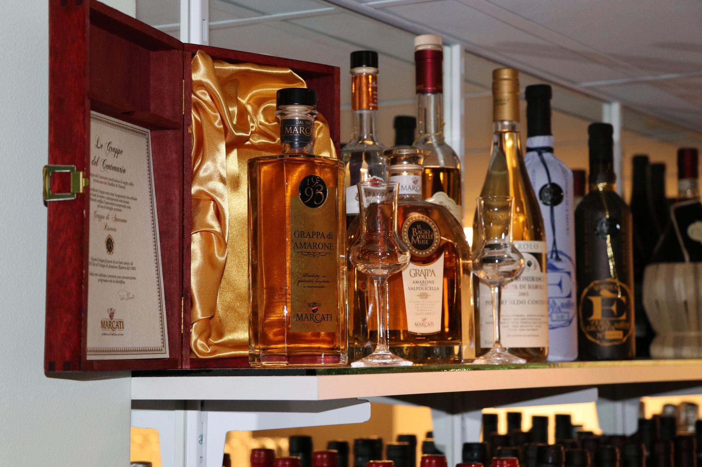

PENNE MANZO E PEPERONCINO (MEDIUM)
215:- kronorOxfile, champinjoner i en krämig pepparsås med chiliflakes och parmesan.

Hos oss på Sandwallsplats I Borås har ni möjligheten att uppleva en bit av Italien.
Här finner du Italiensk mat som tillagas med både kärlek och respekt av de bästa råvarorna, vårat bröd bakas på plats av egen bagare.
Menyn och miljön är skapade för att välkomna alla behov och önskningar.
Har du ont om tid? Hos oss kan du även köpa med dig maten hem.
Se vår meny

Se dagens rätter i veckans lunchmeny nedan.
I lunchen ingår sallad, hembakat bröd, smör, bordsvatten, kaffe
och kaffe bakelse ”Tårta Margherita”.
Pensionärspris, Studentrabatt och Take Away (Dagens) – 119:-
Veckans lunchAfter work
Italienarna associerar mat med kärlek, och en naturlig dryck att skölja ner maten med förutom vatten är såklart en flaska vin. På grund av sitt gynnsamma klimat är Italien även en stor vinproducent med olika druvsorter och vinstilar vilket vi anammat då vi satsar på enbart viner från Italien och serverar de flesta på glas.
AW Meny
Ring eller maila för att boka ett bord.